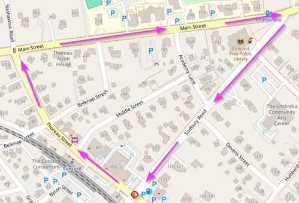
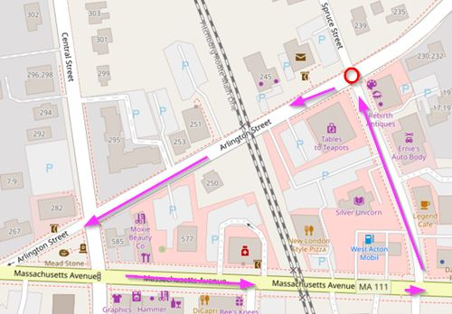
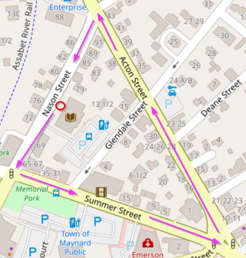

2024-11-24 by Morgan Jassen on lemonmama.com/walking
I'm Going Walking
This I call "Precious Walking"
The goal is to get exercise, be social, and learn.
Concord sidewalks map is here:

1.)
Be healthier and wealthier, wiser and smarter, and happier and richer.
Inviting kindred spirits to spend time together socializing.
Doesn't cost any money.
The rule is to use good judgement, and best effort, for civil and respect.
2.)
Precious Walking can be called 'Before After Work Social Time'.
Meeting times for Precious Walking can be daily.
Precious Walking time meets at the starting point and departs promptly.
The distance can be 1 mile or 3 miles.
Your mileage may vary.
Which town map to choose, is which is closest for these particular walkers.
3.)
But a trait of Precious Walking is, groups can cross over.
So group sparked from work colleagues can invite family members walking too.
Group sparked from next-door neighbors can invite work colleagues too.
4.)
A trait of Precious Walking is, lots of people can attend.
For example, work colleagues, family, neighbor, kids, dogs, friends, retired folks, and more.
Acquaintances and strangers may want to join in.
Be ready for some very real socializing, and do use good judgement.
5.)
A distinctive trait about Precious Walking, is that it is held in a neutral zone.
A turf that is slightly removed but still close.
It's a public forum.
It means that people are meeting together, but at the same time each is still independent.
On the sidewalk or equivalent, that represents public free space.
6.)
Which time to choose, envisioned is before work or after work.
Example for morning then (6:00am or 6:30am).
Example for night then (7:30pm or 8:00pm).
Your time may vary.
7.)
A distinctive thing about Precious Walking is, it needs selling.
It doesn't cost money, but it still needs selling.
And the more I convince people to attend Precious Walking, the more I learn to sell.
People will only attend Precious Walking time if I, or someone, promotes it.
Lucky for me, Precious Walking really is valuable.
The real value here is the socializing, the exercising, and the learning.
So all I need to do in order to 'sell' Precious Walking to folks, is put the time and effort and repetition ongoing to invite people and list the benefits.
And by the golden role, I have faith that people will attend and they will also themselves gain value.
Like surfing in an upward spiral.
West Acton sidewalks map is here:

Maynard:

~~~